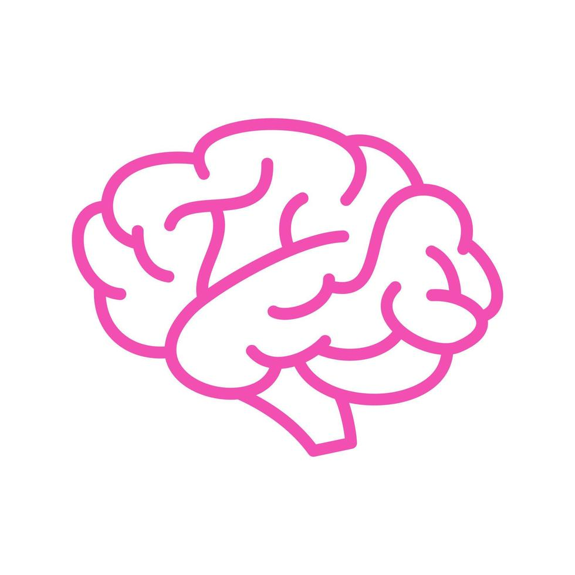
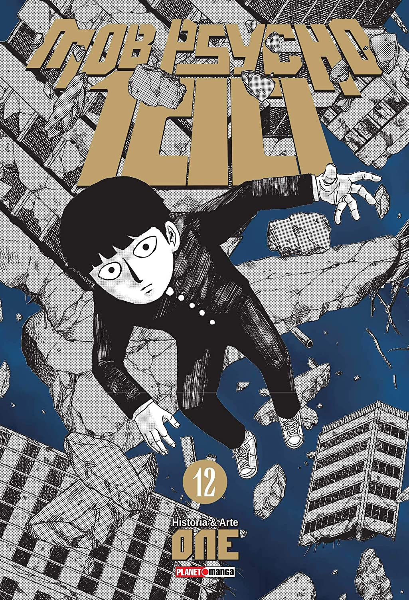
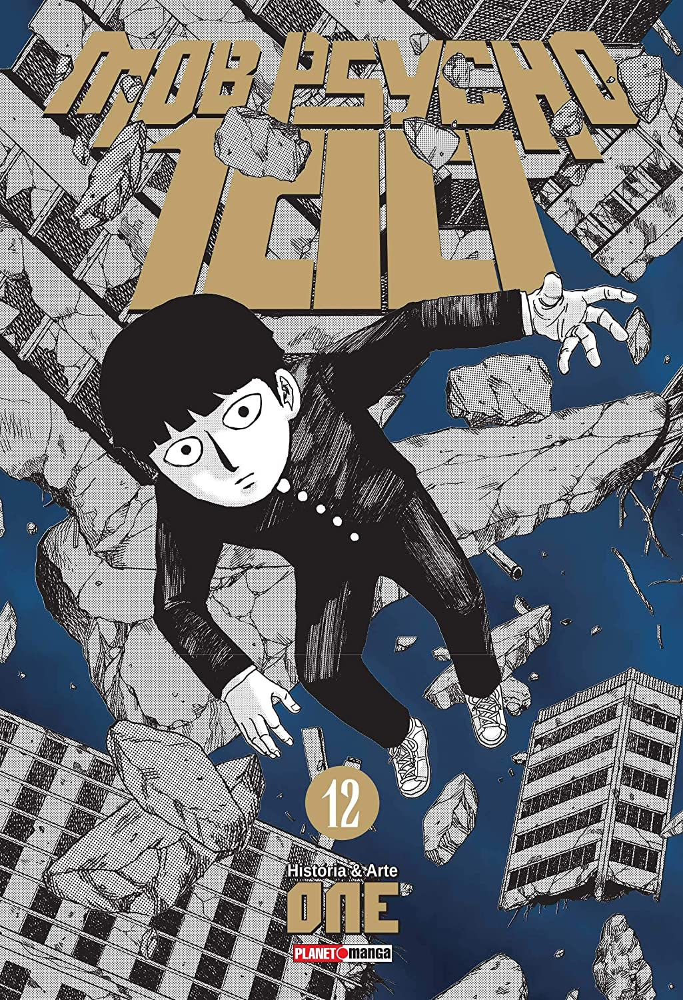

Mob Psycho 100
Mob Psycho 100 é uma obra de ação e comédia que segue Shigeo "Mob" Kageyama, um jovem com poderes psíquicos tentando viver como uma pessoa comum enquanto lida com ameaças sobrenaturais e seu próprio amadurecimento emocional.
A Busca por Aceitação
Mob trabalha muito o conceito sobre a busca da auto-aceitação, aprendendo e entendendo como viver consigo mesmo todos os dias.

Controle Emocional
Lidar com as emoções é um desafio constante, e Mob aprende que sentir intensamente não é errado — o importante é como se age diante disso.

Conexões Humanas
As conexões humanas são fundamentais para seu crescimento, mostrando que amizades verdadeiras ajudam mais do que qualquer poder.
Autodesenvolvimento Pessoal
O esforço pessoal tem grande valor na história, com Mob se dedicando a melhorar por si mesmo, mesmo sem talentos físicos.


 

| Principais Arcos de Mob Psycho 100 | ||
|---|---|---|
| Nome | Descrição | Episódio |
| Arco do Colégio Black Vinegar | Mob enfrenta Teruki (Teru), outro poderoso esper, que inicialmente despreza os fracos. | 1ª Temporada (Eps. 4–6) |
| Arco da Garra – Primeira Investida | Mob, Teru e Ritsu enfrentam a organização Garra (Claw), libertando esper prisioneiros da 7ª Divisão. Primeira grande luta de Mob contra a Garra. | 1ª Temporada (Eps. 8–12) |
| Arco da Telepatia e do Culto ao Mob | Apresentação do culto "LOL" liderado por Dimple e os primeiros contatos com personagens que buscam contatos alienígenas. | 2ª Temporada (Eps. 1–2) |
| Arco da Cidade de Mogami | Mob é preso em uma dimensão mental criada pelo espírito maligno Keiji Mogami. Arco psicológico e sombrio, onde Mob questiona seus valores. | 2ª Temporada (Eps. 5–6) |
| Arco da Garra – Invasão Mundial | Grande guerra entre espers da Garra liderada por Toichiro Suzuki (pai de Shou) contra Mob e seus aliados. | 2ª Temporada (Eps. 9–13) |
| Arco da Explosão de Mob | Após sofrer um acidente, Mob entra em colapso emocional e perde o controle total de seus poderes, manifestando o estado “???%”. | 3ª Temporada (Eps. 7–12) |